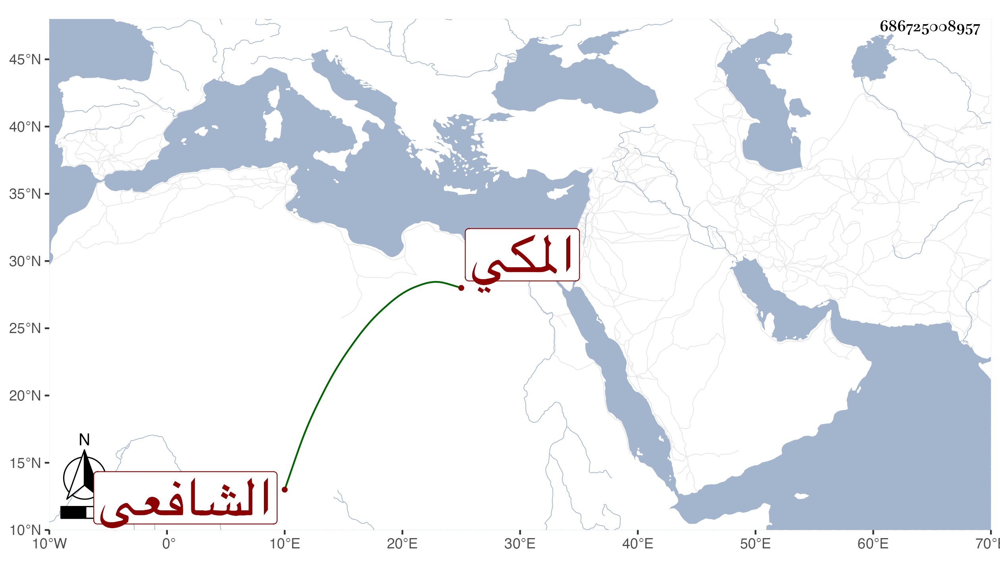

0902Sakhawi.DawLamic.ITO20230111-ara1.EIS1600.686725008957
Biography ID: 686725008957
أحمد بن إبراهيم بن علي بن الكمال محمد بن أبي السعود محمد بن حسين الشهاب ابن عالم الحجاز ورئيسه البرهان بن ظهيرة المكي الشافعي . ولد يوم الجمعة عاشر ذي الحجة سنة خمس وسبعين وثمانمائة وأمه نور الصباح الحبشية فتاة أبيه ونشأ فحفظ القرآن والمنهاج والألفية وجمع الجوامع وسمع على أبيه وحضر دروس أخيه الجمالي وكذا حضر في الإرشاد عند السيد الكمال بن حمزة حين جاور في سنة سبع وتسعين وقرأ علي في البخاري بعد أن سمع علي في حياة أبيه وبعده أشياء وعلى أعيان في العربية والصرف والأصول .
